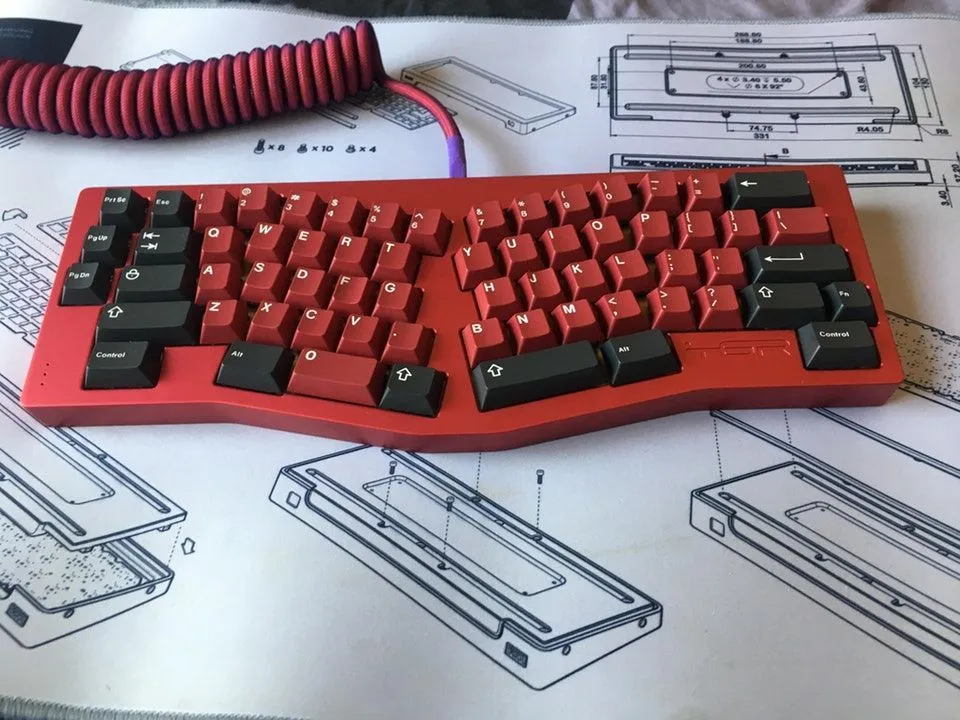
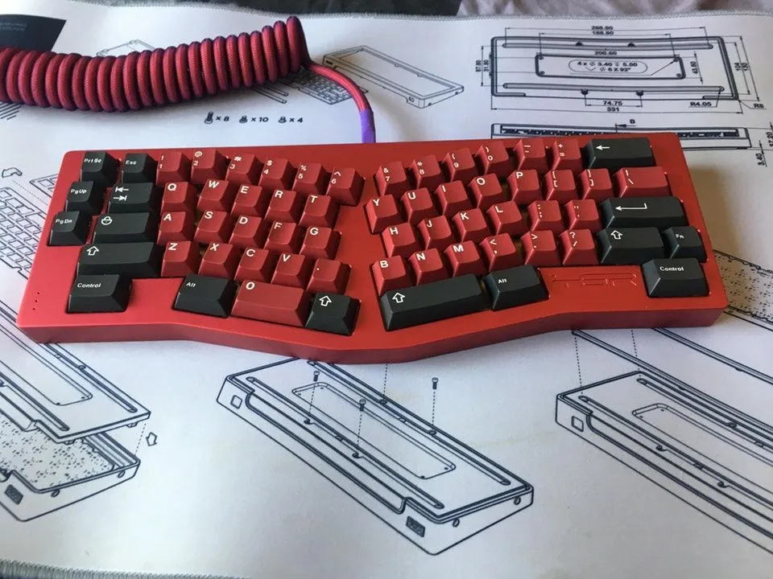
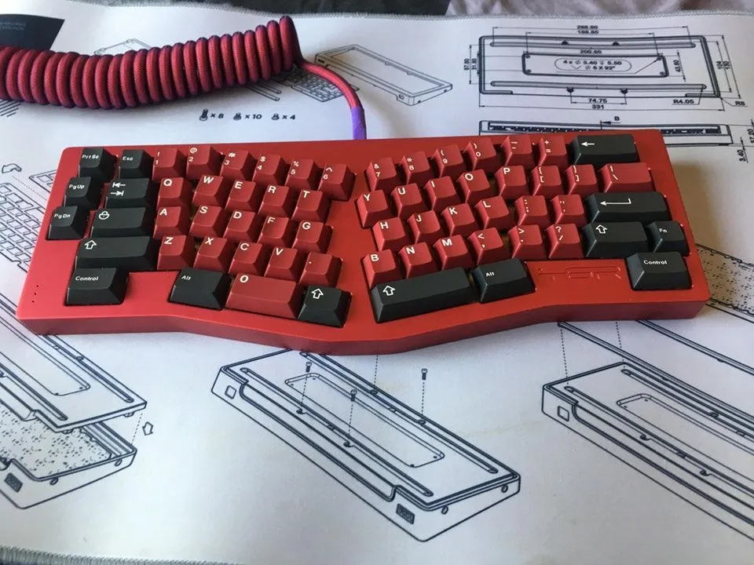

question number 2 split keyboard or alice
 

hey, so this is the part where I apply my knowledge
Note: do not buy smd diodes if its your first time saudering, its very hard but anyways here it starts, first, is your keyboard uncomfortable
question number 2 split keyboard or alice
